<!DOCTYPE html>
<html>
<head>
	<title>Waterlooa Catholic District School Board</title>
<!-- geocoding service OpenCagedata -->
	<link rel="shortcut icon" href="http://geocoder.opencagedata.com/favicon.ico" type="image/x-icon">

	<meta name='viewport' content='width=device-width, user-scalable=no initial-scale=1, maximum-scale=1'>
	<meta charset="utf-8">
<!-- css style sheets -->
	<link rel="stylesheet" href="http://cdn.leafletjs.com/leaflet-0.7.3/leaflet.css" />
	<link rel="stylesheet" href="../dist/css/L.Control.OpenCageSearch.dev.css" />
	<link rel="stylesheet" href="https://maxcdn.bootstrapcdn.com/font-awesome/4.5.0/css/font-awesome.min.css">


	<script src="http://cdn.leafletjs.com/leaflet-0.7.3/leaflet-src.js"></script>
	<script src="../dist/js/L.Control.OpenCageSearch.dev.js"></script>

	
<style>
		
/*format floating title block, floating legend , floating North Arrow*/
		
		.info {
			padding: 6px 8px;
			font: 14px/16px Arial, Helvetica, sans-serif;
			background: white;
			background: rgba(255,255,255,0.8);
			box-shadow: 0 0 15px rgba(0,0,0,0.8);
			border-radius: 5px;
		}
		.info h4 {
			margin: 0 0 5px;
			color: #777;
		}


	
	 type="text/css">
		body {
			margin: 0;
		}
		#map {
			position: absolute;
			top: 0; bottom: 0; left: 0; right: 0
		}
	</style>
</head>


<body>

	
	<div id="map"></div>

<!-- polygon geoJson files school boundary districts -->
	<script src="esboundarymp-geojson.js" type="text/javascript"></script>

    <script src="hsboundaryh-geojson.js" type="text/javascript"></script>
   
<!-- zoom and pan limits -->

	<script type="text/javascript">
		var map = L.map('map').setView([43.45168, -80.49253], 11);
		map.setMaxBounds([[43.265161, -80.869518], [43.690324,  -80.184668]]);
		
// control that shows Floating Title Block
		var info = L.control();

		info.onAdd = function (map) {
			this._div = L.DomUtil.create('div', 'info');
			this.update();
			return this._div;
		};

		info.update = function (props) {
			this._div.innerHTML = '<h1>Waterloo Catholic District School Board:</h1><h4>Schools and School Catchment Areas</h4> '
				
		};

		info.addTo(map);


// Geocoder including geocoding access code and activation button (placed in upper left)
		var options = {
			key: 'ba390f3d0fe187983e0146d5f474f482', position: 'topleft'
		};
		var geocoder = L.Control.OpenCageSearch.geocoder(options);
		var control = L.Control.openCageSearch(options).addTo(map);
		


// Base map tiles are loaded
		L.tileLayer('https://api.tiles.mapbox.com/v4/{id}/{z}/{x}/{y}.png?access_token=pk.eyJ1IjoibWFwYm94IiwiYSI6ImNpandmbXliNDBjZWd2M2x6bDk3c2ZtOTkifQ._QA7i5Mpkd_m30IGElHziw', {
			maxZoom: 13, minZoom:8,
			attribution: 'Map data &copy; <a href="http://openstreetmap.org">OpenStreetMap</a> contributors, ' +
				'<a href="http://creativecommons.org/licenses/by-sa/2.0/">CC-BY-SA</a>, ' +
				'Geocoding © <a href="http://www.opencagedata.com/">OpenCage</a>',
			id: 'mapbox.streets'
		}).addTo(map);


// legend

var info = L.control({position: 'bottomleft'});

		info.onAdd = function (map) {
			this._div = L.DomUtil.create('div', 'info');
			this.update();
			return this._div;
		};

		info.update = function (props) {
			this._div.innerHTML = '<h3>Waterloo Catholic District School Board</h3> <h4><i class="fa fa-circle "style="color:green"></i>         Elementary Schools</h4><h4><i class="fa fa-circle fa-lg"style="color:blue"></i>High Schools </h4><h4><i class="fa fa-square-o fa-lg"style="color:blue"></i>High School Catchment Area </h4><h4><i class="fa fa-search fa-lg"></i>Address Search: School Accomodation by Address </h4> '


		};

		info.addTo(map);

	//North Arrow	
var info = L.control({position: 'bottomright'});

		info.onAdd = function (map) {
			this._div = L.DomUtil.create('div', 'info');
			this.update();
			return this._div;
		};

		info.update = function (props) {
			this._div.innerHTML = '<h1>N</h1> <h1><i class="fa fa-long-arrow-up fa-2x"></i></h1>'


		};

		info.addTo(map);

// add school districts (polygons) from 1) esboundarymp-geojson.js and 2) "hsboundaryh-geojson.js (blue lines high school catchment areas(doyh,resh,benh,davh,mryh ))

L.geoJson([doyh,resh,benh,davh,mryh ,stclem, holyf, mt, sluke, sdan, sgab, cm, stjoC, spet, ctk, sfran, svdp, sannC, mh, stmarg, sjohn, lourd, sagn, smat, sburn, sgreg, smike, jp2, stK, spaul, SEB, sbon, stEL , sbri, saug, hf, sdom, smark, stim, sal, olfat, hros, snick, jsween, blsac, skat, olgrac, seliz, sanne, saga ], {


			style: function (feature) {
				return feature.properties && feature.properties.style;
			},

			onEachFeature: onEachFeature,

			pointToLayer: function (feature, latlng) {
				return L.circleMarker(latlng, {
					
				});
			}
		}).addTo(map);


		function onEachFeature(feature, layer) {
			var popupContent = "<p>WCDSB :  " ;
					;

			if (feature.properties && feature.properties.popupContent) {
				popupContent += feature.properties.popupContent;
			}

			layer.bindPopup(popupContent);
		}


// Scalable green markers and popups for WCDSB Elementary Schools

// Resurrection family of schools (9 elementary schools)

L.circle([ 43.37626782,-80.71421206], 200,{fillColor: "#169e77",color: "#000",weight: 1,opacity: 1,fillOpacity: 0.8}).addTo(map).bindPopup('<p><b>Holy Family Catholic Elementary School </b><br>313 Huron St ,<br>New Hamburg, ON <br>N2N3B9<br>519-662-1734<br></p><p><a href="http://holyfamily.wcdsb.ca/">Visit our Website</a></p><div></div>', {minWidth : 256});

L.circle([ 43.43659194,-80.62959412], 200, {fillColor: "#169e77",color: "#000",weight: 1,opacity: 1,fillOpacity: 0.8}).addTo(map).bindPopup('<p><b>St. Agatha Catholic Elementary School </b><br>186 Notre Dame Dr. ,<br>St Agatha, ON<br>N0B2L0<br>519-747-1801<br></p><p><a href="http://stagatha.wcdsb.ca/">Visit our Website</a></p><div></div>', {minWidth : 256});

L.circle([ 43.47209671, -80.58799536], 200, {fillColor: "#169e77",color: "#000",weight: 1,opacity: 1,fillOpacity: 0.8}).addTo(map).bindPopup('<p><b>St. Nicholas Catholic Elementary School </b><br>525 Laurelwood Dr. ,<br>Waterloo, ON <br>N2V2N1<br>519-884-9198<br></p><p><a href="http://stnicholas.wcdsb.ca/">Visit our Website</a></p><div>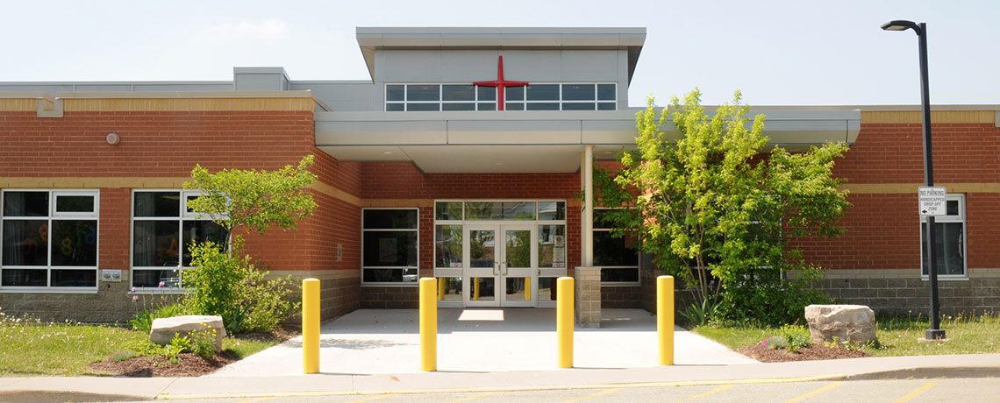</div>', {minWidth : 256});

L.circle([43.44537904,-80.55377022], 200, {fillColor: "#169e77",color: "#000",weight: 1,opacity: 1,fillOpacity: 0.8}).addTo(map).bindPopup('<p><b>Holy Rosary Catholic Elementary School </b><br>485 Thorndale Dr. ,<br>Waterloo, ON <br>N2T1W5<br>519-747-9005<br></p><p><a href="http://holyrosary.wcdsb.ca/">Visit our Website</a></p><div>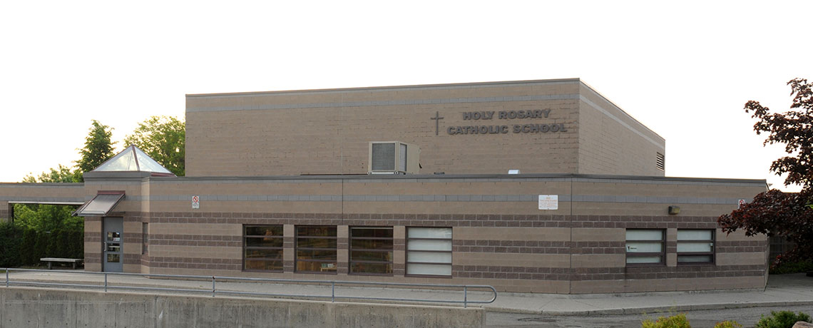</div>', {minWidth : 256});

L.circle([ 43.45948362,-80.53038091], 200, {fillColor: "#169e77",color: "#000",weight: 1,opacity: 1,fillOpacity: 0.8}).addTo(map).bindPopup('<p><b>Our Lady of Lourdes Catholic Elementary School </b><br>55 Roslin Ave S. ,<br>Waterloo, ON <br>N2L6N5<br>519-886-4810<br></p><p><a href="http://lourdes.wcdsb.ca/">Visit our Website</a></p><div>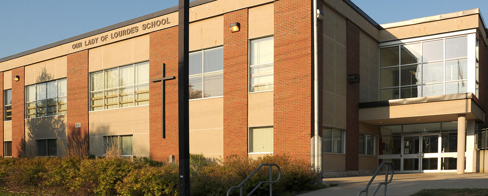</div>', {minWidth : 256});

L.circle([ 43.43385001,-80.54007394], 200, {fillColor: "#169e77",color: "#000",weight: 1,opacity: 1,fillOpacity: 0.8}).addTo(map).bindPopup('<p><b>St. Dominic Savio Catholic Elementary School </b><br>3 Westforest Trail  ,<br>Kitchener, ON <br>N2N3A6<br>519-576-5503<br></p><p><a href="http://stdominic.wcdsb.ca/">Visit our Website</a></p><div>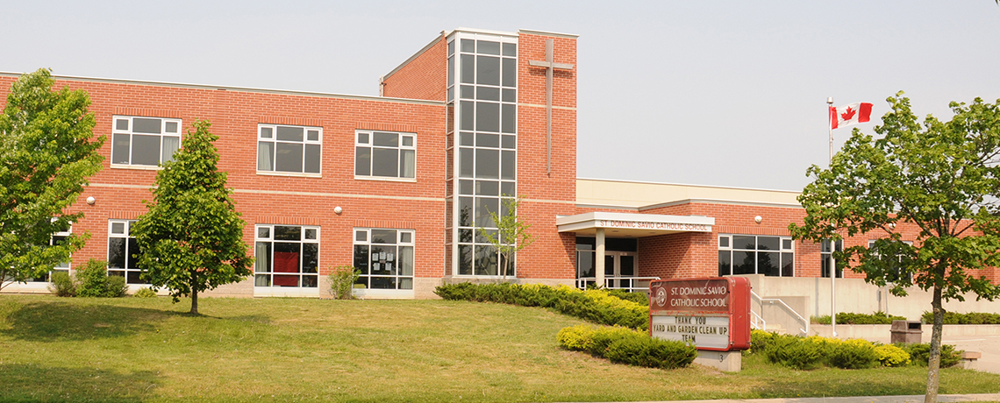</div>', {minWidth : 256});

L.circle([ 43.42052861 ,-80.53111314], 200, {fillColor: "#169e77",color: "#000",weight: 1,opacity: 1,fillOpacity: 0.8}).addTo(map).bindPopup('<p><b>St. Mark Catholic Elementary School </b><br>240 Autumn Hill Cres.  ,<br>Kitchener, ON <br>N2N1K8<br>519-743-4682<br></p><p><a href="http://stmark.wcdsb.ca/">Visit our Website</a></p><div>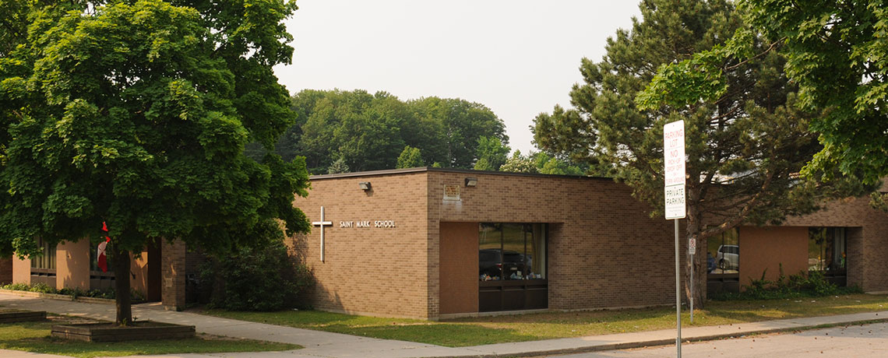</div>', {minWidth : 256});

L.circle([ 43.44906620 ,-80.50899849], 200, {fillColor: "#169e77",color: "#000",weight: 1,opacity: 1,fillOpacity: 0.8}).addTo(map).bindPopup('<p><b>St. John Catholic Elementary School</b><br>99 Strange St.  ,<br>Kitchener, ON <br>N2G1R4<br>519-579-0890<br></p><p><a href="http://stjohns.wcdsb.ca/">Visit our Website</a></p><div>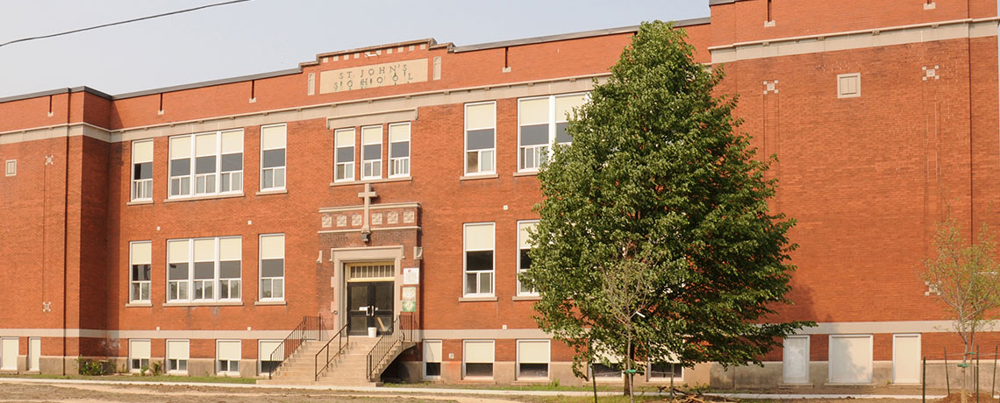</div>', {minWidth : 256});

L.circle( [ 43.42552158,-80.51619454 ], 200,  {fillColor: "#169e77",color: "#000",weight: 1,opacity: 1,fillOpacity: 0.8}).addTo(map).bindPopup('<p><b>St. Paul Catholic Elementary School</b><br>45 Birchcliffe Ave.  ,<br>Kitchener, ON <br>N2M4V7<br>519-743-4401<br></p><p><a href="http://stpaul.wcdsb.ca//">Visit our Website</a></p><div>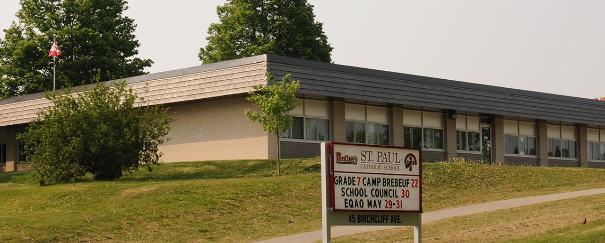</div>', {minWidth : 256});


// Monsignor Doyle family of schools (7 elementary schools)

L.circle([ 43.34710245,-80.30433921 ], 200, {fillColor: "#169e77",color: "#000",weight: 1,opacity: 1,fillOpacity: 0.8}).addTo(map).bindPopup('<p><b>St. Francis Catholic Elementary School (Cambridge)</b><br>60 McDonald Ave,<br>Cambridge, ON <br>N2N3B9<br>519-621-0371<br></p><p><a href="http://stfranciscambridge.wcdsb.ca/">Visit our Website</a></p><div>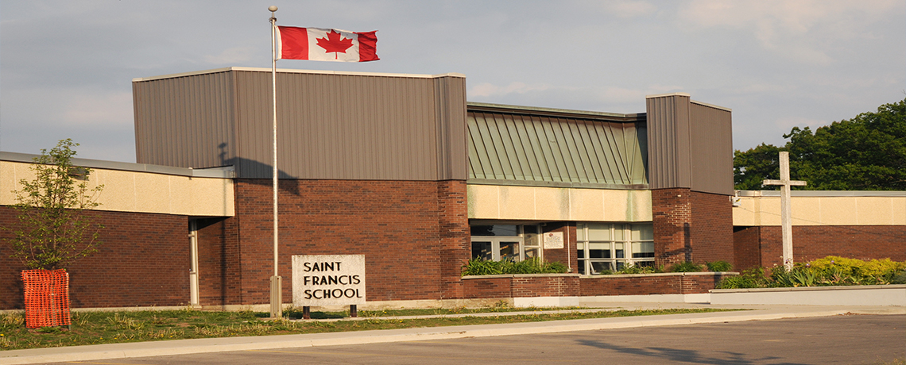</div>', {minWidth : 256});

L.circle([ 43.34628658,-80.29025494 ], 200, {fillColor: "#169e77",color: "#000",weight: 1,opacity: 1,fillOpacity: 0.8}).addTo(map).bindPopup('<p><b>St. Vincent de Paul Catholic Elementary School</b><br>30 Faial Rd.  ,<br>Cambridge, ON<br>N1R7C3<br>519-740-0678<br></p><p><a href="http://stvincent.wcdsb.ca/">Visit our Website</a></p><div>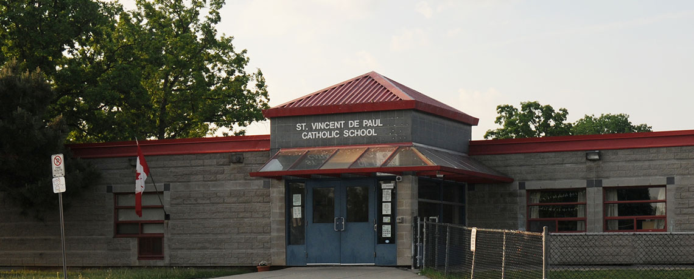</div>', {minWidth : 256});

L.circle([43.34378136,-80.27980583 ], 200, {fillColor: "#169e77",color: "#000",weight: 1,opacity: 1,fillOpacity: 0.8}).addTo(map).bindPopup('<p><b>Holy Spirit Catholic Elementary School</b><br>15 Gate House Dr.  ,<br>Cambridge, ON<br>N1P1C7<br>519-621-8973<br></p><p><a href="http://holyspirit.wcdsb.ca/">Visit our Website</a></p><div>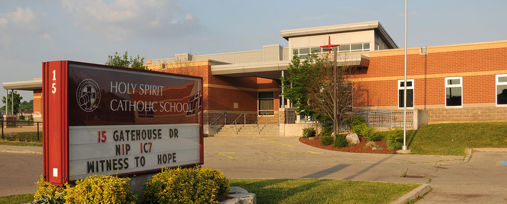</div>', {minWidth : 256});

L.circle([ 43.35409446,-80.29732265 ], 200, {fillColor: "#169e77",color: "#000",weight: 1,opacity: 1,fillOpacity: 0.8}).addTo(map).bindPopup('<p><b>St. Anne  Catholic Elementary School (Cambridge)</b><br>127 Elgin St N.  ,<br>Cambridge, ON<br>N1R5H6<br>519-621-8920<br></p><p><a href="http://stannecambridge.wcdsb.ca//">Visit our Website</a></p><div>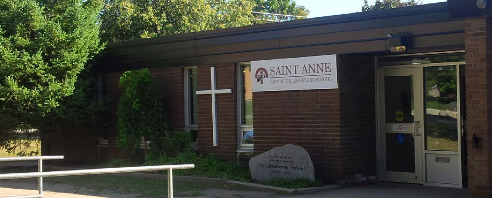</div>', {minWidth : 256});

L.circle([ 43.34952573,-80.32740973 ], 200, {fillColor: "#169e77",color: "#000",weight: 1,opacity: 1,fillOpacity: 0.8}).addTo(map).bindPopup('<p><b>St. Gregory Catholic Elementary School</b><br>34 Osborne Ave.  ,<br>Cambridge, ON<br>N1S3H1<br>519-621-6770<br></p><p><a href="http://stgregory.wcdsb.ca/">Visit our Website</a></p><div>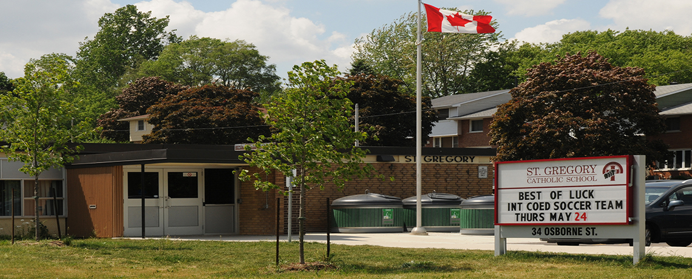</div>', {minWidth : 256});

L.circle([ 43.37034782,-80.33571125 ], 200,  {fillColor: "#169e77",color: "#000",weight: 1,opacity: 1,fillOpacity: 0.8}).addTo(map).bindPopup('<p><b>St. Augustine Catholic Elementary School</b><br>177 Bismark Dr.  ,<br>Cambridge, ON<br>N1S4Y2<br>519-740-3530<br></p><p><a href="http://staugustine.wcdsb.ca/">Visit our Website</a></p><div>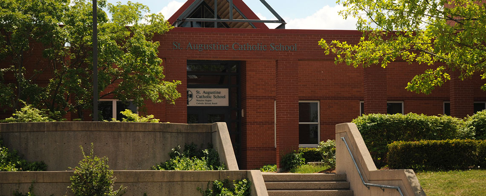</div>', {minWidth : 256});

L.circle([ 43.29061139,-80.46060616 ], 200, {fillColor: "#169e77",color: "#000",weight: 1,opacity: 1,fillOpacity: 0.8}).addTo(map).bindPopup('<p><b>St. Brigid Catholic Elementary School</b><br>50 Broom St.  ,<br>Ayr, ON<br>N0B1E0<br>519-632-5101<br></p><p><a href="http://stbrigid.wcdsb.ca/">Visit our Website</a></p><div>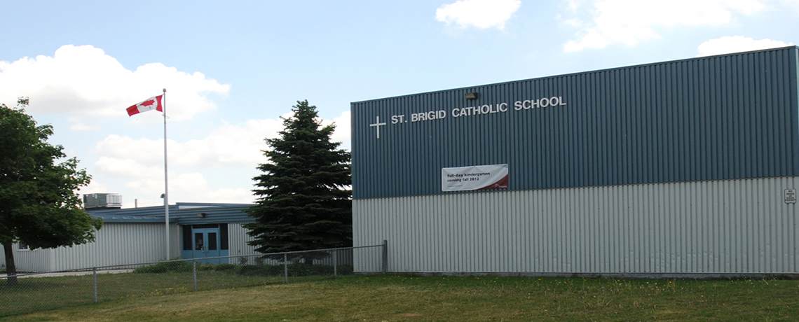</div>', {minWidth : 256});


// St. Benedicts family of schools (9 elementary schools)

L.circle([43.44272622,-80.31242268 ], 200, {fillColor: "#169e77",color: "#000",weight: 1,opacity: 1,fillOpacity: 0.8}).addTo(map).bindPopup('<p><b>St. Gabriel Catholic Elementary School</b><br>15 Baldwin Drive,<br>Cambridge‎, ON <br>N3C 0G1<br>519-658-2008<br></p><p><a href="http://stgabriel.wcdsb.ca//">Visit our Website</a></p><div>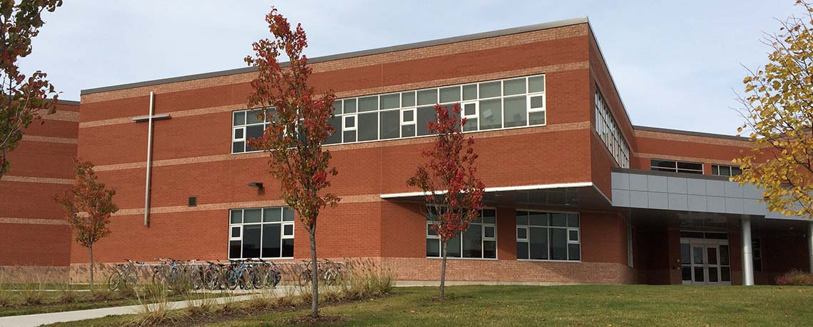</div>', {minWidth : 256});

L.circle([ 43.43211255, -80.29927686], 200,{fillColor: "#169e77",color: "#000",weight: 1,opacity: 1,fillOpacity: 0.8}).addTo(map).bindPopup('<p><b>Our Lady of Fatima Catholic Elementary School</b><br>55 Hammet St.  ,<br>Cambridge, ON<br>N3C2H5<br>519-658-4041<br></p><p><a href="http://fatima.wcdsb.ca/">Visit our Website</a></p><div>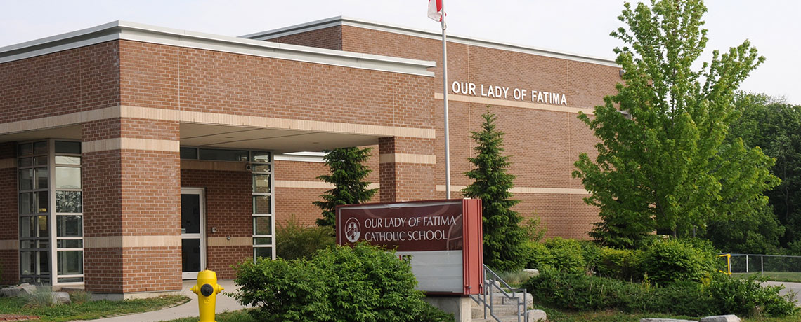</div>', {minWidth : 256});

L.circle([43.42555491,-80.29080183 ], 200,{fillColor: "#169e77",color: "#000",weight: 1,opacity: 1,fillOpacity: 0.8}).addTo(map).bindPopup('<p><b>St. Elizabeth Catholic Elementary School</b> <br>50 Adler Dr.,<br>Cambridge, ON<br>N3C4B7<br>519-651-0400<br></p><p><a href="http://stelizabeth.wcdsb.ca/">Visit our Website</a></p><div>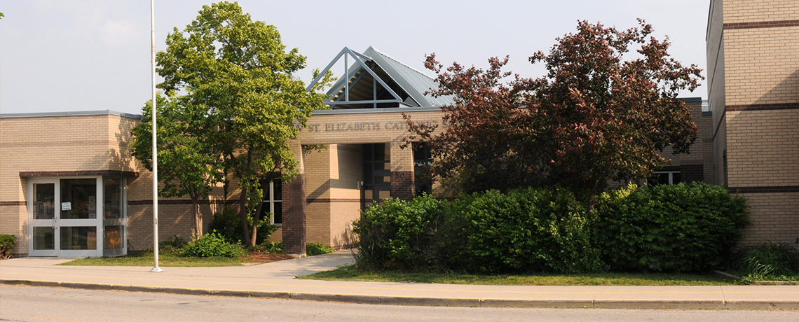</div>', {minWidth : 256});

L.circle([ 43.39064448,-80.28312998 ], 200, {fillColor: "#169e77",color: "#000",weight: 1,opacity: 1,fillOpacity: 0.8}).addTo(map).bindPopup('<p><b>Blessed Mother Teresa Catholic Elementary School</b><br>520 Saginaw Pkwy.  ,<br>Cambridge, ON<br>N1T1W9<br>519-624-7115<br></p><p><a href="http://motherteresa.wcdsb.ca//">Visit our Website</a></p><div>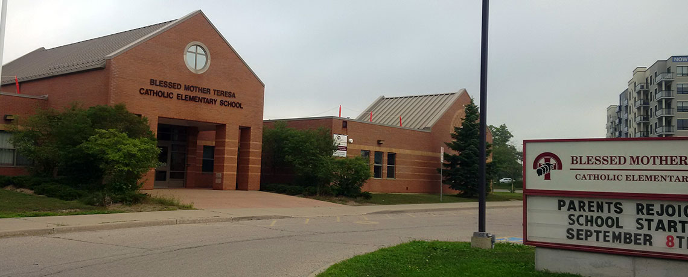</div>', {minWidth : 256});

L.circle([ 43.38919205,-80.29761707 ], 200, {fillColor: "#169e77",color: "#000",weight: 1,opacity: 1,fillOpacity: 0.8}).addTo(map).bindPopup('<p><b>St. Margaret of Scotland Catholic Elementary School</b><br>210 Cowan Blvd.  ,<br>Cambridge, ON<br>N1T1V4<br>519-622-6100<br></p><p><a href="http://stmargaret.wcdsb.ca/">Visit our Website</a></p><div>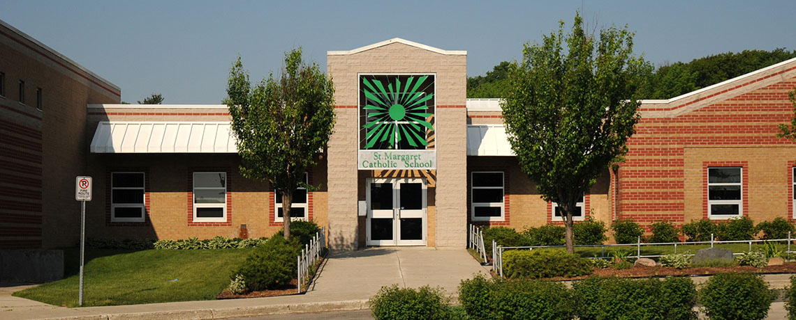</div>', {minWidth : 256});

L.circle([ 43.38763421,-80.30792648 ], 200, {fillColor: "#169e77",color: "#000",weight: 1,opacity: 1,fillOpacity: 0.8}).addTo(map).bindPopup('<p><b>Christ the King Catholic Elementary School</b><br>70 Acorn Way  ,<br>Cambridge, ON<br>N1R8M5<br>519-621-6680<br></p><p><a href="http://christtheking.wcdsb.ca//">Visit our Website</a></p><div>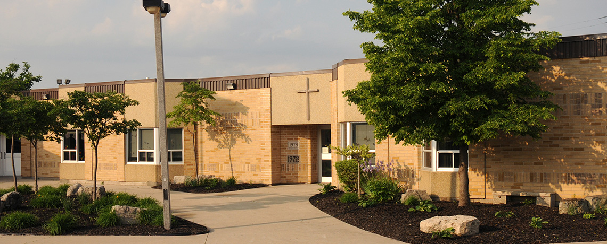</div>', {minWidth : 256});

L.circle([43.37786284, -80.31088489 ], 200, {fillColor: "#169e77",color: "#000",weight: 1,opacity: 1,fillOpacity: 0.8}).addTo(map).bindPopup('<p><b>St. Peter Catholic Elementary School</b><br>92 Avenue Rd.,<br>Cambridge, ON<br>N1R1C1<br>519-621-5211<br></p><p><a href="http://stpeter.wcdsb.ca/">Visit our Website</a></p><div>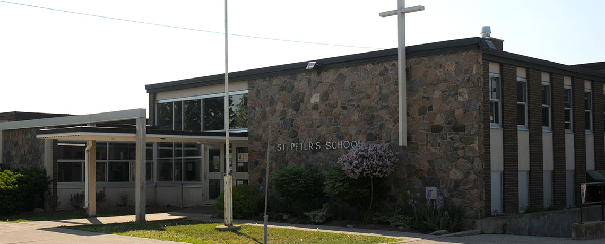</div>', {minWidth : 256});

L.circle([ 43.39614826,-80.34532841 ], 200, {fillColor: "#169e77",color: "#000",weight: 1,opacity: 1,fillOpacity: 0.8}).addTo(map).bindPopup('<p><b>St. Michael  Catholic Elementary School (Cambridge)</b> <br>1150 Concession Rd.,<br>Cambridge, ON<br>N3H4L6<br>519-653-3351<br></p><p><a href="http://stmichael.wcdsb.ca/">Visit our Website</a></p><div>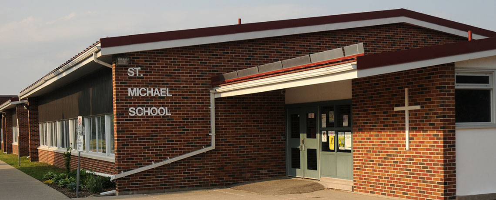</div>', {minWidth : 256});

L.circle([ 43.38904709,-80.36636603 ], 200, {fillColor: "#169e77",color: "#000",weight: 1,opacity: 1,fillOpacity: 0.8}).addTo(map).bindPopup('<p><b>St. Joseph Catholic Elementary School</b><br>980 Westminster Dr S.,<br>Cambridge, ON <br>N3H1V2<br>519-653-4482<br></p><p><a href="http://stjosephcambridge.wcdsb.ca/">Visit our Website</a></p><div>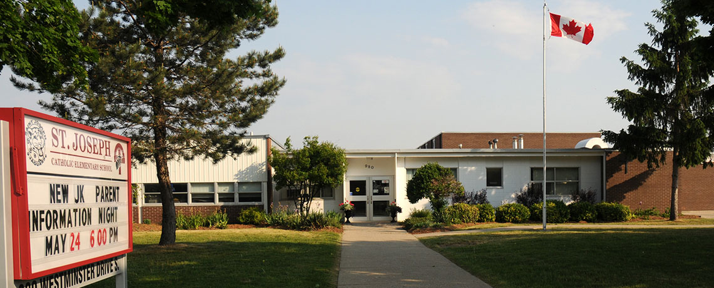</div>', {minWidth : 256});


// St. David's family of schools (8 elementary schools)

L.circle([ 43.59258857, -80.57126462], 200, {fillColor: "#169e77",color: "#000",weight: 1,opacity: 1,fillOpacity: 0.8}).addTo(map).bindPopup('<p><b>St. Teresa  Catholic Elementary School (Elmira)</b><br>69 First Street West,<br>Elmira, ON<br>N3B1G5<br>519-669-8843<br></p><p><a href="http://stteresaelmira.wcdsb.ca/">Visit our Website</a></p><div>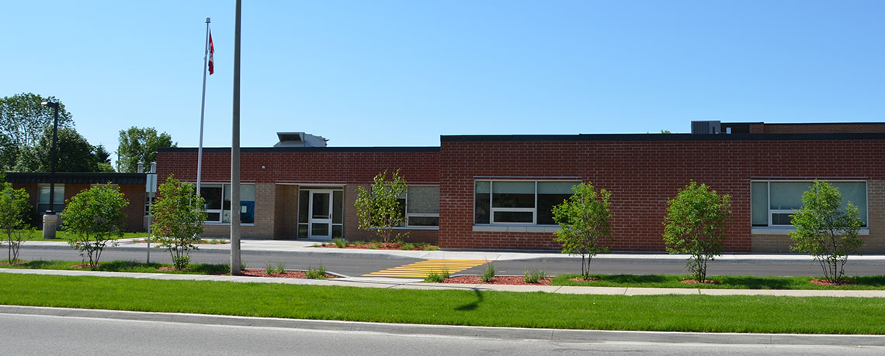</div>', {minWidth : 256});

L.circle([ 43.53587015,-80.39283145 ], 200, {fillColor: "#169e77",color: "#000",weight: 1,opacity: 1,fillOpacity: 0.8}).addTo(map).bindPopup('<p><b>St. Boniface Catholic Elementary School</b><br>1354 Maryhill Rd,<br>Maryhill, ON<br>N0B2B0<br>519-648-2832<br></p><p><a href="http://stboniface.wcdsb.ca//">Visit our Website</a></p><div>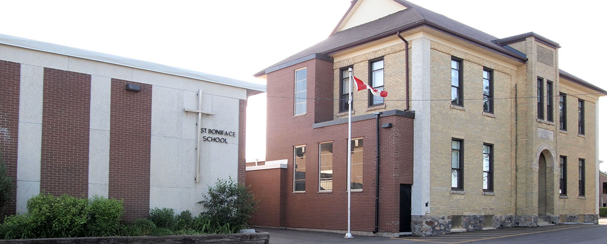</div>', {minWidth : 256});

L.circle([ 43.52376577, -80.65417192], 200,  {fillColor: "#169e77",color: "#000",weight: 1,opacity: 1,fillOpacity: 0.8}).addTo(map).bindPopup('<p><b>St. Clement Catholic Elementary School</b><br>3639 Lobsinger Line ,<br>St Clements, ON<br>N0B2M0<br>519-699-5271<br></p><p><a href="http://stclement.wcdsb.ca//">Visit our Website</a></p><div>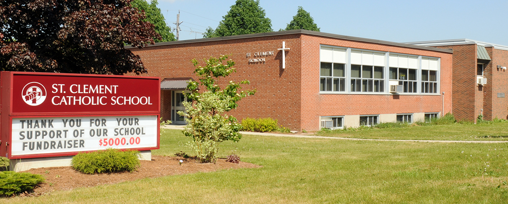</div>', {minWidth : 256});

L.circle([ 43.50957421, -80.50442096 ], 200,  {fillColor: "#169e77",color: "#000",weight: 1,opacity: 1,fillOpacity: 0.8}).addTo(map).bindPopup('<p><b>St. Luke Catholic Elementary School</b><br>550 Chesapeake Dr.  ,<br>Waterloo, ON <br>N2K4G5<br>519-884-4912<br></p><p><a href="http://stluke.wcdsb.ca/">Visit our Website</a></p><div>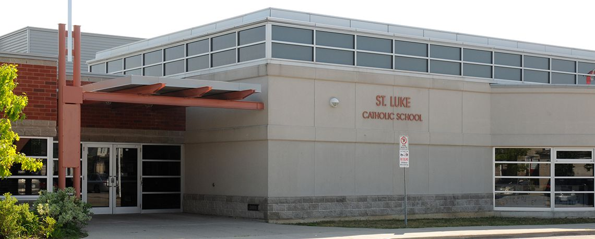</div>', {minWidth : 256});

L.circle([ 43.49523959 ,-80.49403561], 200, {fillColor: "#169e77",color: "#000",weight: 1,opacity: 1,fillOpacity: 0.8}).addTo(map).bindPopup('<p><b>St. Matthew Catholic Elementary School</b><br>405 Pastern Trail   ,<br>Waterloo, ON <br>N2K3V6<br>519-886-9311<br></p><p><a href="http://stmatthew.wcdsb.ca/">Visit our Website</a></p><div>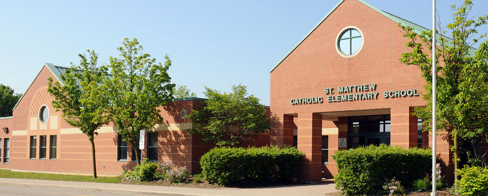</div>', {minWidth : 256});

L.circle([ 43.49197120 ,-80.55431968], 200, {fillColor: "#169e77",color: "#000",weight: 1,opacity: 1,fillOpacity: 0.8}).addTo(map).bindPopup('<p><b>Sir Edgar Bauer Catholic Elementary School</b><br>660 Glen Forest Blvd.  ,<br>Waterloo, ON <br>N2L4K2<br>519-884-8480<br></p><p><a href="http://siredgarbauer.wcdsb.ca/">Visit our Website</a></p><div>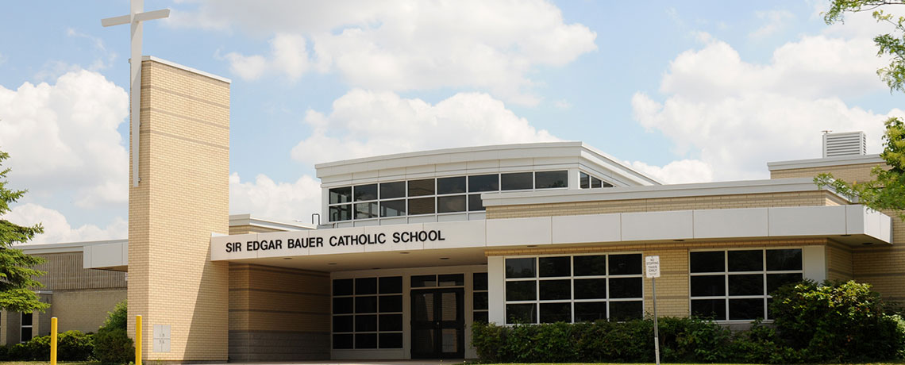</div>', {minWidth : 256});

L.circle([ 43.47391431,-80.50208501 ], 200,  {fillColor: "#169e77",color: "#000",weight: 1,opacity: 1,fillOpacity: 0.8}).addTo(map).bindPopup('<p><b>St. Agnes Catholic Elementary School</b><br>254 Neilson Ave   ,<br>Waterloo, ON <br>N2J2M3<br>519-885-3180<br></p><p><a href="http://stagnes.wcdsb.ca/">Visit our Website</a></p><div></div>', {minWidth : 256});

L.circle([ 43.46779984,-80.48794627 ], 200,  {fillColor: "#169e77",color: "#000",weight: 1,opacity: 1,fillOpacity: 0.8}).addTo(map).bindPopup('<p><b>St. Teresa Catholic Elementary School (Kitchener)</b><br>270 Edwin St.   ,<br>Kitchener, ON <br>N2H4P4<br>519-743-2131<br></p><p><a href="http://stteresak.wcdsb.ca/">Visit our Website</a></p><div>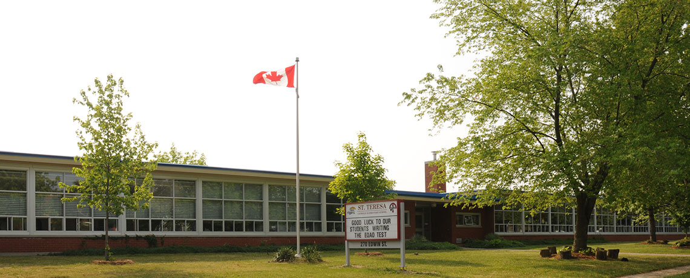</div>', {minWidth : 256});


// St. Marys family of schools (12 elementary schools)

L.circle([ 43.41815432,-80.49279355 ], 200, {fillColor: "#169e77",color: "#000",weight: 1,opacity: 1,fillOpacity: 0.8}).addTo(map).bindPopup('<p><b>Monsignor R.M. Haller Catholic Elementary School</b><br>118 Shea Cres.   ,<br>Kitchener, ON <br>N2E1E8<br>519-579-1230<br></p><p><a href="http://haller.wcdsb.ca/">Visit our Website</a></p><div>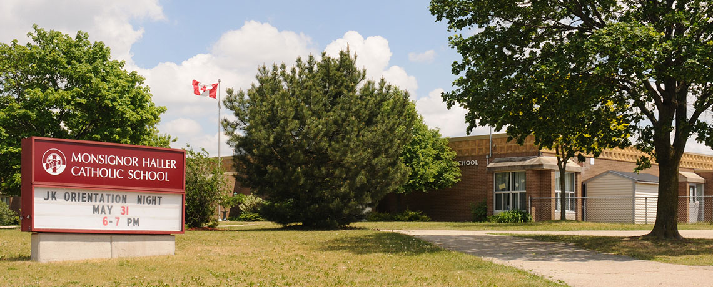</div>', {minWidth : 256});

L.circle([ 43.40731346, -80.48340273], 200,  {fillColor: "#169e77",color: "#000",weight: 1,opacity: 1,fillOpacity: 0.8}).addTo(map).bindPopup('<p><b>Blessed Sacrament Catholic Elementary School</b><br>367 The Country Way    ,<br>Kitchener, ON <br>N2B2S3<br>519-745-5950<br></p><p><a href="http://blessedsacrament.wcdsb.ca/">Visit our Website</a></p><div>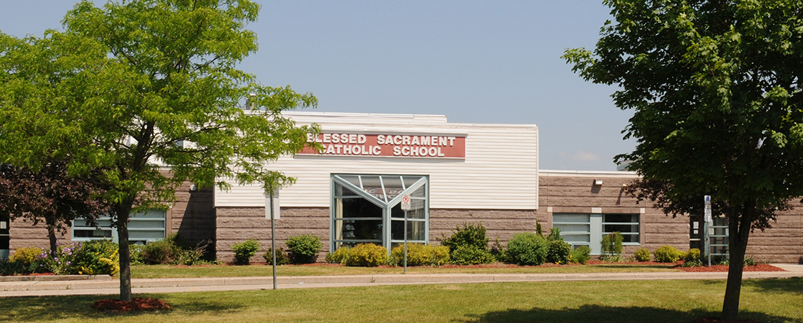</div>', {minWidth : 256});

L.circle([ 43.46170906,-80.44621206 ], 200,  {fillColor: "#169e77",color: "#000",weight: 1,opacity: 1,fillOpacity: 0.8}).addTo(map).bindPopup('<p><b>Canadian Martyrs Catholic Elementary School</b><br>50 Confederation Dr.    ,<br>Kitchener, ON <br>N2B2X5<br>519-578-7579<br></p><p><a href="http://cmartyrs.wcdsb.ca/">Visit our Website</a></p><div>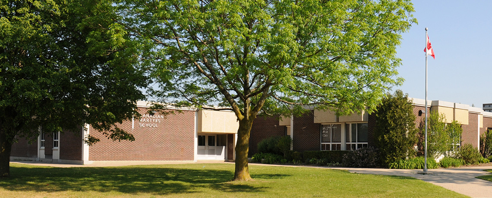</div>', {minWidth : 256});

L.circle([ 43.39232259,-80.43763485 ], 200,  {fillColor: "#169e77",color: "#000",weight: 1,opacity: 1,fillOpacity: 0.8}).addTo(map).bindPopup('<p><b>St. Timothy Catholic Elementary School</b><br>15 Bechtel Dr.    ,<br>Kitchener, ON <br>N2P1T4<br>519-748-1874<br></p><p><a href="http://sttimothy.wcdsb.ca/">Visit our Website</a></p><div></div>', {minWidth : 256});


L.circle([ 43.43397332 ,-80.49158370], 200,  {fillColor: "#169e77",color: "#000",weight: 1,opacity: 1,fillOpacity: 0.8}).addTo(map).bindPopup('<p><b>St. Bernadette Catholic Elementary School</b><br>245 Lorne Ave.    ,<br>Kitchener, ON <br>N2M3Y9<br>519-743-1541<br></p><p><a href="http://stbernadette.wcdsb.ca/">Visit our Website</a></p><div>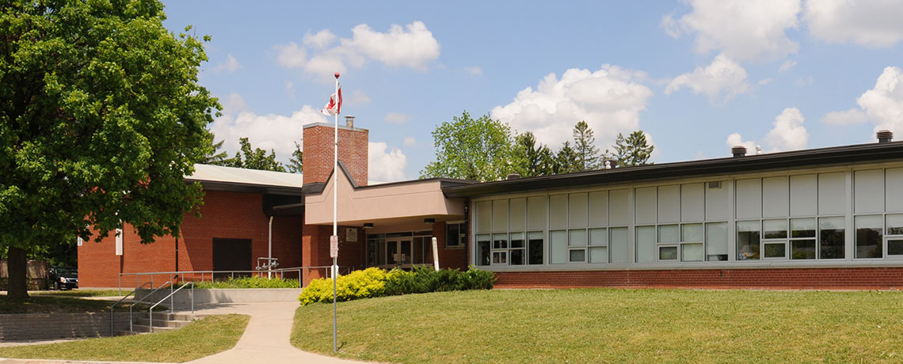</div>', {minWidth : 256});

L.circle([43.44900118,-80.41219229 ], 200,  {fillColor: "#169e77",color: "#000",weight: 1,opacity: 1,fillOpacity: 0.8}).addTo(map).bindPopup('<p><b>Pope John Paul II Catholic Elementary School</b><br>75 Pebblecreek Drive     ,<br>Kitchener, ON <br>N2A4K1<br>519-742-7378<br></p><p><a href="http://sjp.wcdsb.ca/">Visit our Website</a></p><div>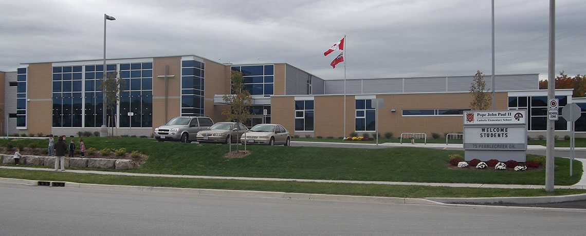</div>', {minWidth : 256});

L.circle([43.39286969,-80.44973827 ], 200,  {fillColor: "#169e77",color: "#000",weight: 1,opacity: 1,fillOpacity: 0.8}).addTo(map).bindPopup('<p><b>St. Kateri Tekakwitha Catholic Elementary School</b><br>560 Pioneer Dr.      ,<br>Kitchener, ON <br>ON N2P1P2<br>519-895-1716<br></p><p><a href="http://stkateri.wcdsb.ca/">Visit our Website</a></p><div></div>', {minWidth : 256});

L.circle([ 43.41990388,-80.47841877], 200, {fillColor: "#169e77",color: "#000",weight: 1,opacity: 1,fillOpacity: 0.8}).addTo(map).bindPopup('<p><b>Our Lady of Grace Catholic Elementary School</b><br>70 Gracefield Cres.,<br>Kitchener, ON <br>N2E1R9<br>519-745-3961<br></p><p><a href="http://ourladyofgrace.wcdsb.ca/">Visit our Website</a></p><div>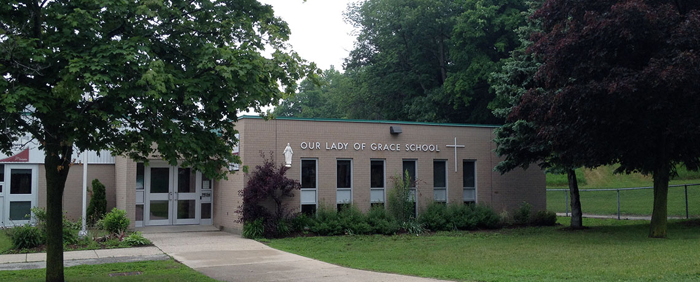</div>', {minWidth : 256});

L.circle([43.40774240,-80.51150893 ], 200,  {fillColor: "#169e77",color: "#000",weight: 1,opacity: 1,fillOpacity: 0.8}).addTo(map).bindPopup('<p><b>John Sweeney Catholic Elementary School</b><br>185 Activa Ave,<br>Kitchener, ON <br>N2E4A1<br>519-579-5212<br></p><p><a href="http://js.wcdsb.ca/">Visit our Website</a></p><div>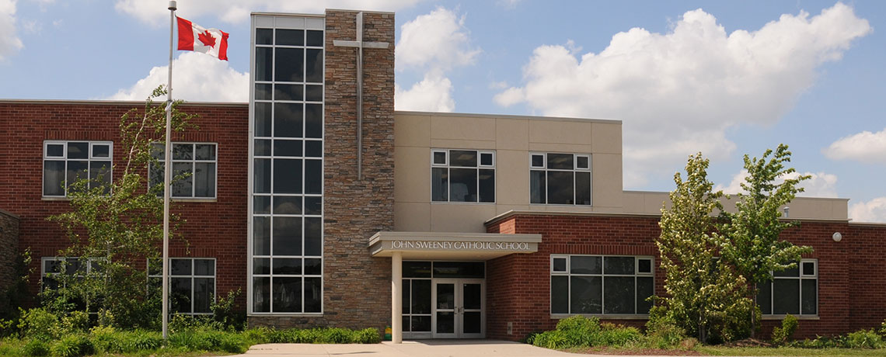</div>', {minWidth : 256});

L.circle([ 43.42877013, -80.44514142], 200,  {fillColor: "#169e77",color: "#000",weight: 1,opacity: 1,fillOpacity: 0.8}).addTo(map).bindPopup('<p><b>St. Aloysius Catholic Elementary School</b><br>504 Connaught St.<br>Kitchener, ON <br>N2C1C2<br>519-893-5830<br></p><p><a href="http://staloysius.wcdsb.ca/">Visit our Website</a></p><div>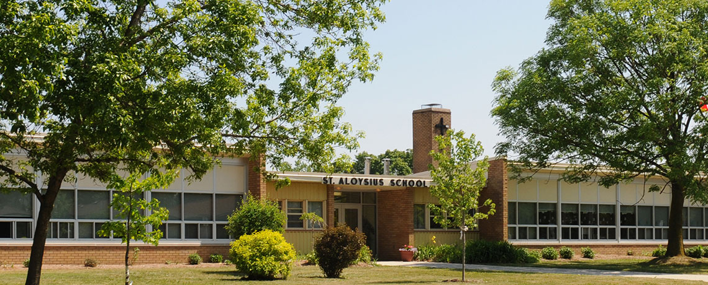</div>', {minWidth : 256});

L.circle( [ 43.45103309,-80.47082221 ], 200,  {fillColor: "#169e77",color: "#000",weight: 1,opacity: 1,fillOpacity: 0.8}).addTo(map).bindPopup('<p><b>St. Anne  Catholic Elementary School (Kitchener)</b><br>250 East Ave.<br>Kitchener, ON <br>N2H1Z4<br>519-745-7847<br></p><p><a href="http://stannekitchener.wcdsb.ca//">Visit our Website</a></p><div></div>', {minWidth : 256});

L.circle([ 43.44831185,-80.44842139 ], 200,  {fillColor: "#169e77",color: "#000",weight: 1,opacity: 1,fillOpacity: 0.8}).addTo(map).bindPopup('<p><b>St. Daniel Catholic Elementary School</b><br>39 Midland Dr. <br>Kitchener, ON <br>N2A2A9<br>519-893-8801<br></p><p><a href="http://stdaniel.wcdsb.ca/">Visit our Website</a></p><div>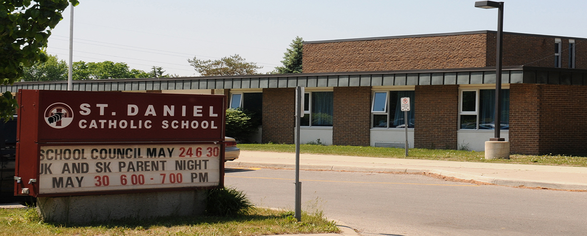</div>', {minWidth : 256});


// Scalable blue markers and popups for WCDSB High Schools

L.circle([43.44124224,-80.54730837], 300, {fillColor: "#0000cc",color: "#000",weight: 1,opacity: 1,fillOpacity: 0.8}).addTo(map).bindPopup('<p><b>Resurrection Catholic Secondary School</b><br>455 University Ave W,<br>Kitchener, ON <br>N2N3B9<br>519-741-1990<br></p><p><a href="http://resurrection.wcdsb.ca/">Visit our Website</a></p><div>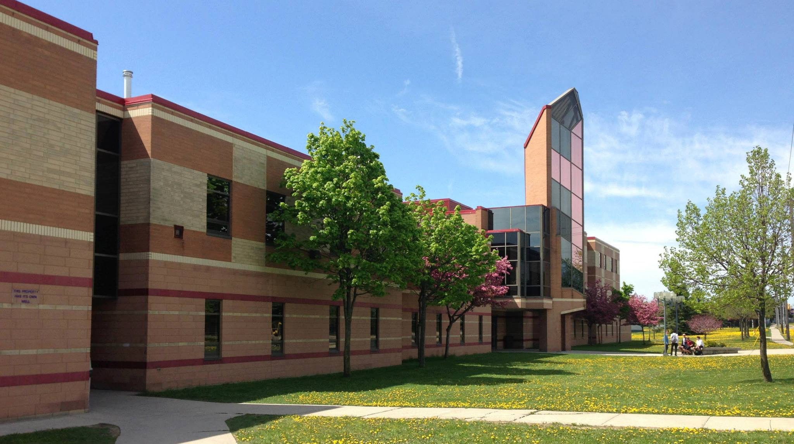</div>', {minWidth : 256});

L.circle([43.41875268,-80.46881247],300,{fillColor: "#0000cc",color: "#000",weight: 1,opacity: 1,fillOpacity: 0.8}).addTo(map).bindPopup('<p><b>St. Marys High School</b><br>1500 Block Line Rd,<br>Kitchener, ON <br>N2C2S2<br>519-745-6891<br></p><p><a href="http://stmary.wcdsb.ca/">Visit our Website</a></p><div>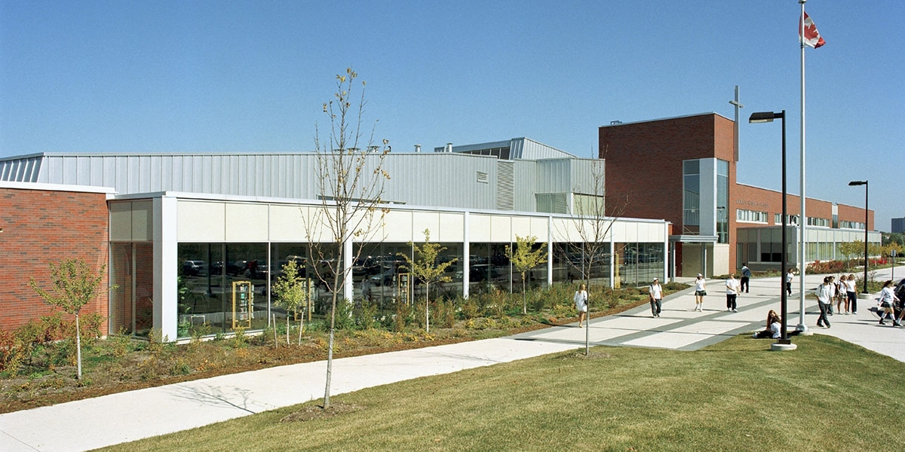</div>', {minWidth : 256});

L.circle([43.39282392,-80.29965113], 300,{fillColor: "#0000cc",color: "#000",weight: 1,opacity: 1,fillOpacity: 0.8}).addTo(map).bindPopup('<p><b>St. Benedict Catholic Secondary School</b><br>50 Saginaw Pkwy ,<br>Cambridge, ON <br>N1R5W1<br>519-621-4050<br></p><p><a href="http://stbenedict.wcdsb.ca/">Visit our Website</a></p><div>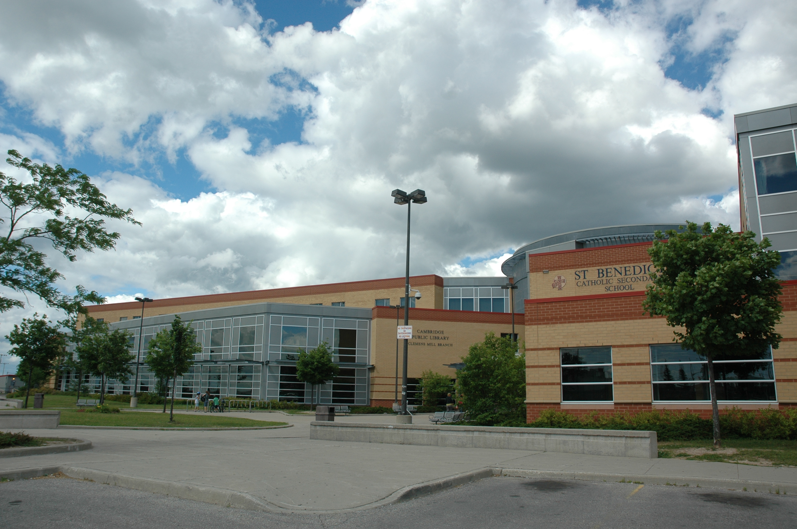</div>', {minWidth : 256});


L.circle([43.34039188,-80.29764973], 300,{fillColor: "#0000cc",color: "#000",weight: 1,opacity: 1,fillOpacity: 0.8}).addTo(map).bindPopup('<p><b>Monsignor Doyle Catholic Secondary School</b><br>185 Myers Rd ,<br>Cambridge, ON <br>N1R7H2<br>519-622-1290<br></p><p><a href="http://doyle.wcdsb.ca/">Visit our Website</a></p><div>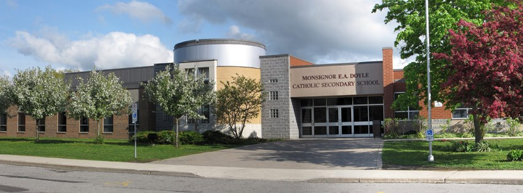</div>', {minWidth : 256});


L.circle([43.48394784,-80.52941154], 300,{fillColor: "#0000cc",color: "#000",weight: 1,opacity: 1,fillOpacity: 0.8}).addTo(map).bindPopup('<p><b>St. David Catholic Secondary School</b><br>4 High St ,<br>Waterloo, ON<br> N2L3X5<br>519-885-1340<br></p><p><a href="http://stdavid.wcdsb.ca/">Visit our Website</a></p><div>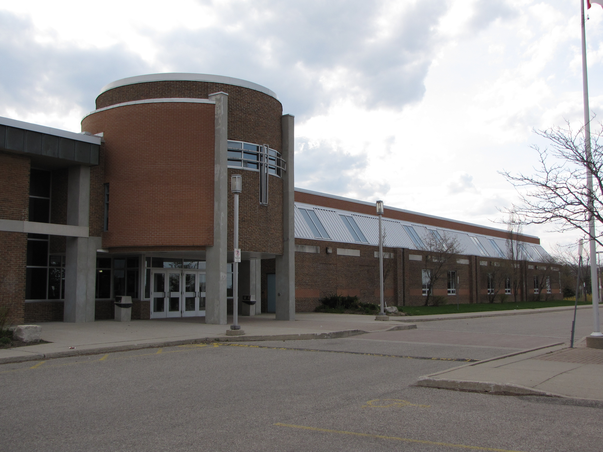</div>', {minWidth : 256});


		


	</script>
</body>
</html>
